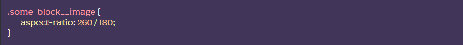

Для роботи модуля адаптивних зображень “IBG” необхідно додати клас ibg безпосоредньо до зображення, або скористатись сніпетом ibg:
Далі, для налаштування потрібних співвідношень сторін зображення, необхідно додати властивість aspect-ratio до конкретного зображення, в якості значення вказати ширину та висоту через слеш
Наприклад якщо розміри зображення в макеті 260px ширина та 180px висота то пишемо:
За замовченням на зображення діє алгоритм масштабування cover, щоб змініти на contain додайте модифікатор .ibg–contain.
Також, якщо треба змінити позиціонування зображення на відмінне від center додайте відповідний модифікотор .ibg–top, .ibg–left, .ibg–bottom, .ibg–right
Примітка. В більшості випадках зображення не потребує додаткової HTML обгортки, за виключенням ситуацій, коли воно є FLEX-елементом та є потреба в певній поведінці.